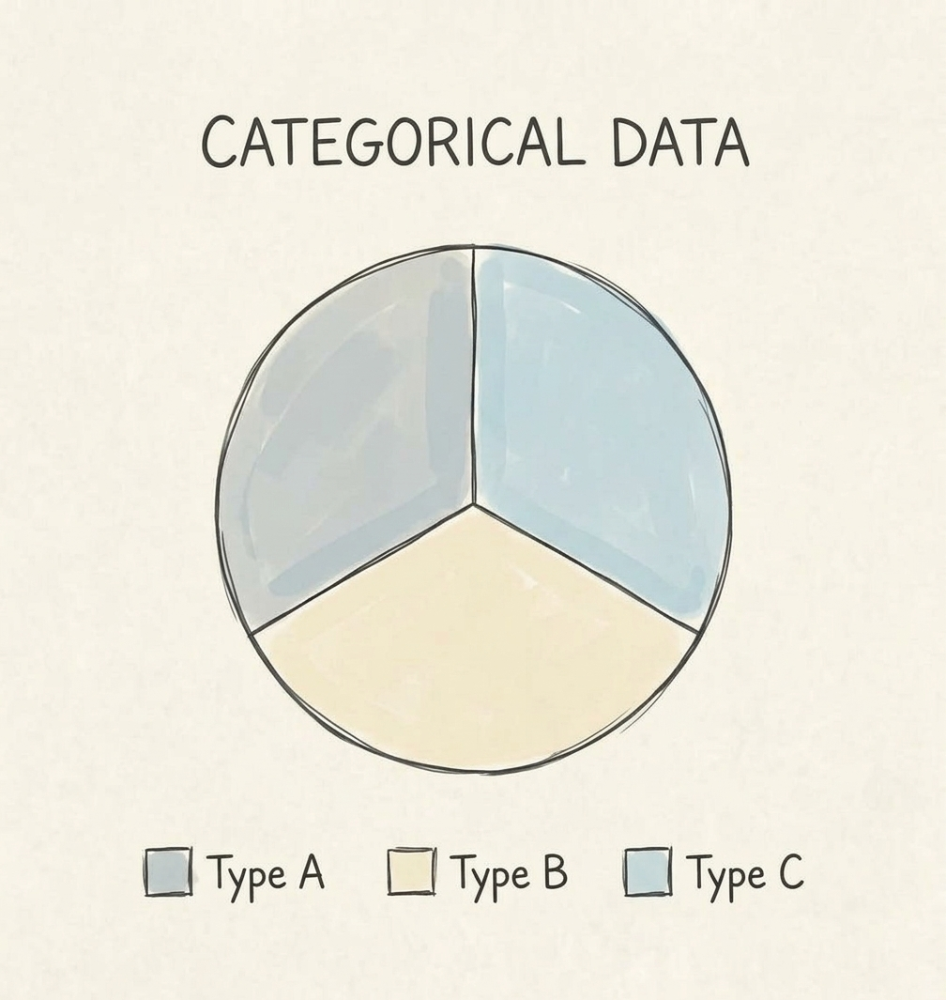
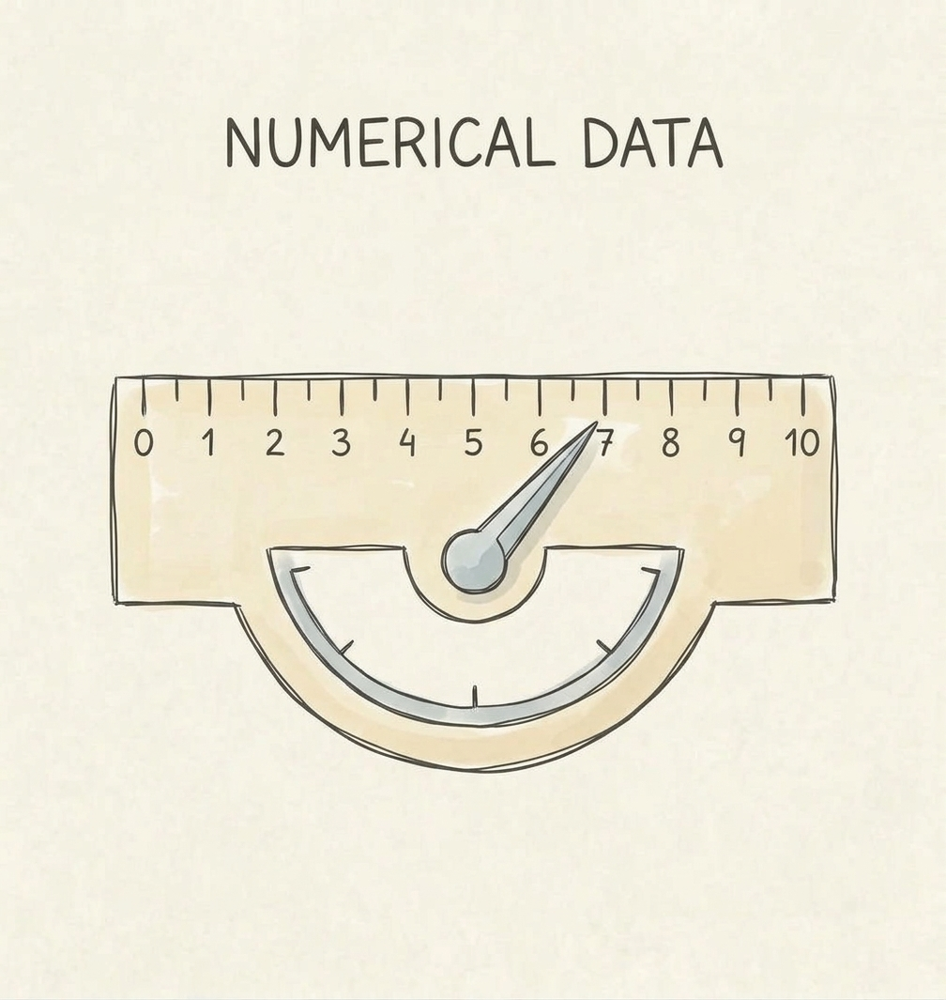
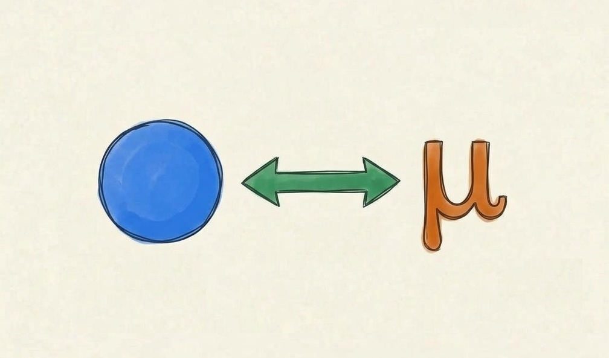
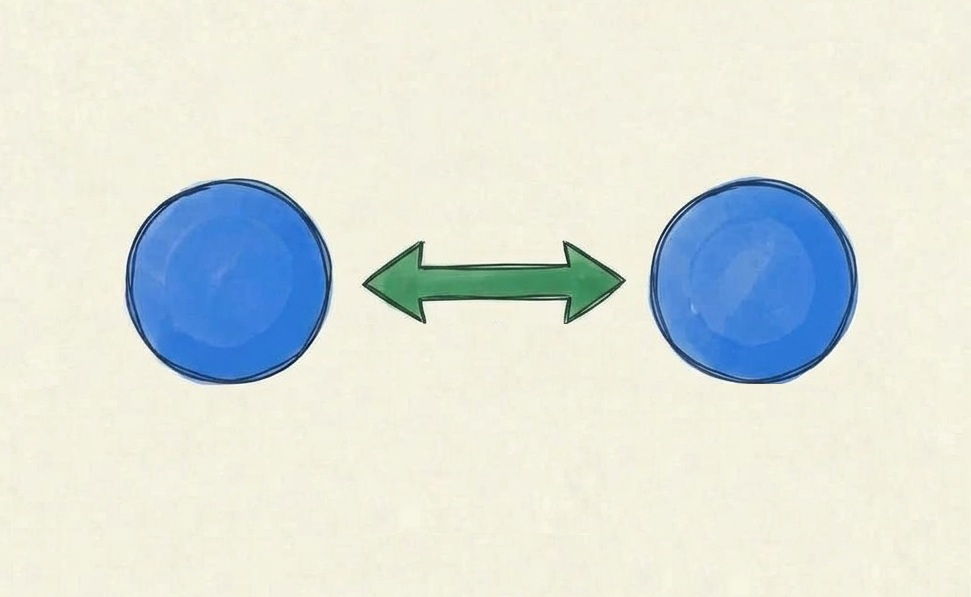
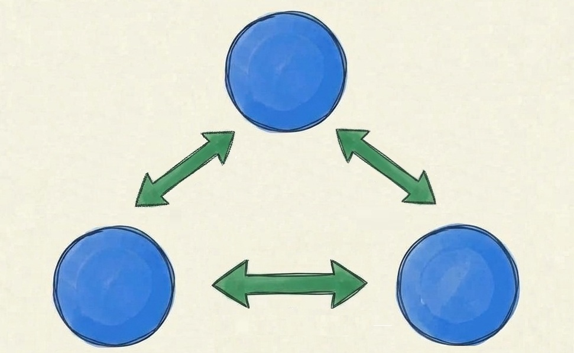
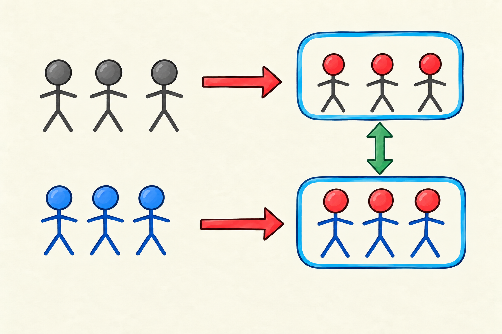
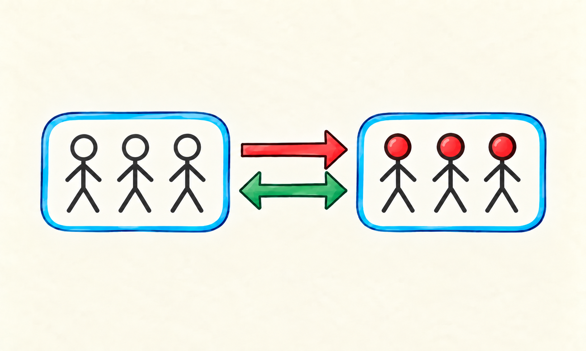

Statistics for Pharmacists
Week 7 · Comparing groups
Graduate Pharmaceutical Studies
Comparing groups
Week 7
Are these groups meaningfully different?
Week 6 gave us the general inference machinery. This week is about choosing a statistic and a reference distribution that fit the data structure and scientific question.
We already know the recipe
From Week 6
Observe sample statistic
→
Standardize sampling variability
→
Decide CI + test + effect
Today we change the test statistic to match the data and the question.
There is no universal test statistic
Data structure matters
Binary outcome
\(\hat p\)
counts and proportions
Continuous outcome
\(\bar x, s\)
means and spreads
Several groups
\(\bar x_1 \, \text{vs.} \, \bar x_2\)
between vs within variability
The test name comes last
First identify the variable, sampling structure, parameter of interest, and comparison.
The target is still the population
Do not lose the inferential target
Observed sample
what happened in these patients
Sampling model
what would vary across repetitions
Population parameter
what we want to learn about disease \(D\)
Choosing a test
Part I
A test-selection blueprint
Choose from the data structure and scientific question.
Four questions get us surprisingly far
A practical blueprint
1 Variable type? categorical or continuous
2 How many groups? one, two, or more
3 Paired? same units measured twice?
4 What parameter? location, spread, association, agreement
First branch: what kind of variable?
The arithmetic must make sense
Categorical
counts, proportions, contingency tables
\(O-E\)

Continuous
means, differences, variances
\(\bar x,\;s^2\)

Second branch: what comparison?
Reference vs another group
One sample
compare with a reference value or distribution

Two samples
compare two populations

Three or more
compare several means jointly

Third branch: independent or paired?
What is the observational unit?
Independent
healthy patients and sick patients are different people

Paired
the same patients measured before and after treatment \(\text{T}\)

A paired analysis works on the within-subject differences .
Fourth branch: location or spread?
Different parameters answer different questions
Location
\(\mu,\;p\)
where is the population centered?
Spread
\(\sigma^2\)
how variable is the population?
A compact map for today
Not a memorization table
data / design
one group
two independent groups
paired
binary / categorical
binomial / goodness-of-fit
Fisher / \(\chi^2\)
McNemar
continuous mean
one-sample Student \(t\)
Welch \(t\)
paired Student \(t\)
continuous variance
\(\chi^2\) variance test
\(F\) variance-ratio test
Pitman–Morgan
The point is to reconstruct the choice, not memorize every cell.
Our Week 7 dataset
Synthetic clinical study of disease \(D\)
disease
0 healthy · 1 sick
haemophilia
0 asymptomatic · 1 symptomatic
age group
young · middle · old
hemoglobin
continuous · g/L
id
disease
haemophilia
age group
hemoglobin
001
0
0
young
146
002
1
0
old
121
003
1
1
middle
114
004
0
0
middle
139
005
1
0
old
126
006
0
1
young
134
A paired mini-study inside the dataset
Treatment \(T\) in old subjects
Old patients same people
→
Treatment follow-up period
→
Post-treatment compare with their own baseline
Categorical outcomes
Part II
Counts and proportions
The sampling object is a count, proportion, or contingency table.
One binary proportion vs a reference
Exact binomial test
Observed
\(X\) haemophilic among \(n\) sick patients
Reference world
\(X\sim\mathrm{Binomial}(n,p_0)\)
Question: is the haemophilia proportion in sick patients different from \(p_0=0.50\) ?
Example: exact binomial test
Exact binomial test
Is \(p_{\text{haemophilia}}\) among sick patients different from \(0.50\) ?
Report: observed proportion + CI + exact p-value
One categorical distribution vs a reference
Chi-squared goodness-of-fit
Expected counts
\(E_j=n p_{0j}\)
Discrepancy
\(\sum (O_j-E_j)^2/E_j\)
Example: are young / middle / old sick patients distributed as \(\frac{1}{3}\) , \(\frac{1}{3}\) , \(\frac{1}{3}\) ?
Example: goodness-of-fit
\(\chi^2\) goodness-of-fit
Does the observed age-group distribution match the reference distribution?
Report observed vs expected proportions + \(\chi^2\) + df + p
Two groups and a categorical outcome
Homogeneity
Fisher exact
especially useful for small 2×2 tables
Pearson \(\chi^2\)
compares observed and expected cell counts from marginals
Example: healthy vs sick
Fisher / Pearson \(\chi^2\)
Is haemophilia proportion different in healthy and sick groups?
Report contingency table + risk/proportion difference CI + p-value
Paired binary outcome
McNemar’s test
Before
haemophilia classification at baseline
After
same subjects after treatment
Only the discordant pairs carry information about directional change.
Example: paired categorical change
McNemar
Did the binary classification change after treatment in the same subjects?
Report discordant transitions + paired proportion difference + p
Categorical synthesis
Reconstruct the choice
question
design
statistic
test
binary \(p\) vs \(p_0\)
one sample
count \(X\)
exact binomial
distribution vs reference
one sample
\(\sum(O-E)^2/E\)
\(\chi^2\) GOF
proportions across groups
independent
contingency table
Fisher / Pearson \(\chi^2\)
binary change
paired
discordant pairs
McNemar
Continuous outcomes
Part III
Means and variances
Now the parameters are population location and spread.
One mean vs a reference
One-sample Student’s \(t\)
One-sample Student \(t\)
Is mean hemoglobin in sick patients different from \(130\) g/L?
\(t=(\bar x-130)/(s/\sqrt n)\)
One variance vs a reference
Chi-squared test for one variance
One-variance \(\chi^2\)
Is population SD different from \(10\) g/L?
\((n-1)s^2/\sigma_0^2\sim\chi^2_{n-1}\) under Normality
This test is especially sensitive to non-Normal data.
Two independent means
Welch’s two-sample \(t\) test
Welch \(t\)
Is mean hemoglobin different in healthy and sick populations?
difference in means + SE using both group variances
Welch is the default here: it does not require equal population variances.
Two independent variances
Classical \(F\) variance-ratio test
Variance ratio
Is hemoglobin variability different in healthy and sick populations?
\(F=s_1^2/s_2^2\) · infer a ratio of variances
The classical \(F\) test is strongly sensitive to non-Normality.
Paired continuous means
Paired \(t\) = one-sample \(t\) on differences
Paired Student \(t\)
Did mean hemoglobin change after treatment in the same old subjects?
define \(D_i=post_i-pre_i\) , then test \(E(D)=0\)
Paired continuous variances
Pitman–Morgan test
Pitman–Morgan
Did population variability change between paired pre/post measurements?
tests equality of two variances when measurements are paired
This is a specialized Normal-theory method; use only when the variance question is scientifically meaningful.
Parametric tests come with a model
Assumptions are part of the inferential claim
Independence / sampling design usually more fundamental than the exact shape of the histogram
Distributional shape for small samples, strong skew and outliers can matter; paired tests concern the distribution of differences
Variance structure Welch relaxes equal-variance assumptions for the two-sample mean problem
Model adequacy inspect the data and residual structure rather than using a separate normality test as a mechanical gatekeeper
Normality is not a yes/no property of a sample
Inspect shape, tails, and outliers
QQ plot
quantiles and tail departures
Context
sample size, outliers, balance, scientific plausibility
Moderate or large samples often make mean-based methods robust to mild non-Normality.
How a QQ plot works
Quantile against quantile
Theoretical quantile
where a Normal observation should fall
Sample quantile
where the ordered observation actually falls
Near a line
approximately compatible with Normal location-scale shape
Try it: QQ diagnostics
Interactive distribution diagnostics
Move across the QQ panel: the highlighted point links one theoretical Normal quantile to the corresponding sample quantile.
Specific tests, worked visually
Part IV
From formula to reference distribution
Two worked tests make the general Week 6 machinery concrete.
Welch’s \(t\) : standardize a difference in means
Two independent continuous groups
Difference
\(\bar x_A-\bar x_B\)
Standard error
\(\sqrt{s_A^2/n_A+s_B^2/n_B}\)
Welch statistic
\(t=\frac{\bar x_A-\bar x_B}{SE}\)
The degrees of freedom are adjusted because the two variances are estimated separately.
Try it: Welch’s \(t\) test
Enter summary statistics
What Welch’s test is saying
Keep three outputs together
Estimate
how large is the mean difference?
Interval
which population differences are compatible?
p-value
how extreme is the standardized difference under \(H_0\) ?
The test does not replace effect size or scientific interpretation.
Chi-squared contingency tests: compare observed with expected
The null model builds the expected table
Expected under independence
\(E_{ij}=\frac{R_iC_j}{N}\)
Sum discrepancies
\(X^2=\sum\frac{(O-E)^2}{E}\)
Try it: a contingency table
Pearson chi-squared test
Expected counts are part of the approximation
Small tables need care
Reasonable expected counts
the chi-squared approximation can work well
Sparse cells
exact methods or alternative models may be preferable
This is why Fisher’s exact test remains useful for small 2×2 tables.
ANOVA
Part V
More than two means
Why an analysis of variance answers a question about means.
Why “analysis of variance” for a mean question?
The core logic
Within groups natural patient-to-patient variability
vs
Between groups dose groups have different centers
→
\(F\) signal relative to noise
If group means are truly equal, between-group variability should not dwarf within-group variability.
ANOVA decomposes total variability
One-way ANOVA
Total Sum-of-Squares
\(SS_T\)
all deviations from grand mean
Between Sum-of-Squares
\(SS_B\)
group means vs grand mean
Within Sum-of-Squares
\(SS_W\)
individuals vs their group mean
\(SS_T=SS_B+SS_W\) and \(F=MS_B/MS_W\) .
Try it: one-way ANOVA
Three dose groups
A significant ANOVA is an omnibus statement
At least one mean differs
ANOVA
tests the global null that all means are equal
Tukey
all pairwise comparisons
Dunnett
each treatment against a chosen reference
Post-hoc comparisons answer “which groups?” while controlling multiplicity.
Two factors: dose and smoking
Factorial ANOVA
Dose main effect
averaged across smoking status
Smoking main effect
averaged across doses
Interaction
does the dose effect depend on smoking?
Interaction means “the effect of A depends on B”
Parallel vs non-parallel patterns
No / little interaction dose-response lines are approximately parallel
Interaction dose-response differs across smoking status
Try it: factorial effects
Manipulate main effects and interaction
Factorial models are not six separate t tests
The model asks structured questions
Main effect
a systematic average shift
Interaction
departure from additivity
Do not over-slice
many unplanned pairwise tests recreate multiplicity problems
Agreement and equivalence
Part VI
When “no important difference” is the goal
Association, agreement, equivalence, and interchangeability are different claims.
Association is not agreement
A hierarchy of questions
Association do the variables contain information about each other?
→
Agreement do measurements / ratings coincide?
→
Interchangeability are differences small enough for practical replacement?
A high correlation can coexist with poor agreement.
Categorical agreement: Cohen’s kappa
Two diagnosticians, same patients
Observed agreement
\(P_o\)
Excess agreement
\(\kappa=\frac{P_o-P_e}{1-P_e}\)
Try it: Cohen’s kappa
Edit the 2×2 rating table
Equivalence reverses the usual null logic
Generic vs originator
Choose \(\Delta\) first largest scientifically acceptable difference
→
Test both boundaries difference must be above\(-\Delta\) \(+\Delta\)
→
Conclude equivalence only if both one-sided tests reject
Not “prove the difference is zero”
Exact equality is not the target. Equivalence means the population difference is sufficiently small relative to a pre-specified scientific margin.
Four confidence-interval situations
Equivalence margin \([-\Delta,+\Delta]\)
Equivalent and includes 0
entire 90% CI lies inside the equivalence margin
Equivalent but different from 0
statistical difference can coexist with practical equivalence
Not equivalent, includes 0
too imprecise to establish equivalence
Neither equivalent nor close to 0
difference extends beyond the acceptable margin
Try it: equivalence of two means
TOST shown through the equivalent 90% CI
Interchangeability asks more than mean equivalence
Bland–Altman logic
For each subject
\(d_i=A_i-B_i\)
Limits of agreement
\(\bar d\pm1.96s_d\)
The question is whether individual differences , not just the mean difference, are acceptably small.
Bland–Altman patterns
Four qualitatively different situations
Correlation would miss the point
Agreement is a difference question
High correlation
measurements can move together while one is systematically 10 units higher
Good agreement
individual differences are centered and clinically acceptably narrow
Choose the test
Prediction exercise
A single group of \(80\) patients has a binary adverse-event outcome. You want to know whether the population event proportion differs from the historical value \(0.10\) .
Which inferential structure fits?
Welch \(t\)
exact binomial
McNemar
ANOVA
Exact binomial: one binary proportion compared with a reference probability.
Choose the test: paired data
Prediction exercise
The same \(45\) patients have hemoglobin measured immediately before and after treatment. The question is whether the mean within-patient change is zero.
What statistic should you build first?
two independent means
within-patient differences
variance ratio
contingency table
Compute \(D_i=post_i-pre_i\) , then perform a one-sample \(t\) analysis on the differences.
Read the output, not just the p-value
Interpretation exercise
Difference in means = \(-1.8\) g/L, 95% CI \([-5.5,1.9]\) , p = \(0.34\) .
Which statement is defensible?
the means are proven equal
there is no clinically meaningful effect
the data are compatible with a range of negative and positive effects
\(H_0\) has probability \(0.34\)
The interval is the key: the study is compatible with several population effects. “Not significant” is not proof of equality.
Week 7 synthesis
Do not memorize an encyclopedia
1 · Identify data categorical vs continuous
2 · Identify design one / two / many; paired vs independent
3 · Identify parameter proportion, mean, variance, agreement
4 · Choose machinery statistic + reference distribution + CI
Then explain the effect estimate, uncertainty, assumptions, and scientific meaning.
Next week
Week 8 · Association and regression
from comparing groups → modelling relationships
Correlation, linear regression, and the first generalized linear model ideas.